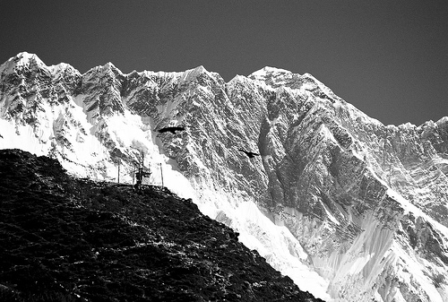
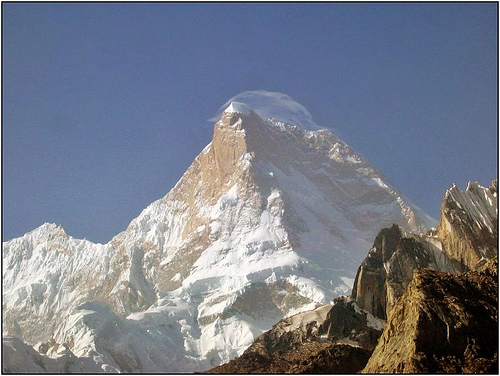

World Highest 5 mountains
Mountain files: the 5 tallest mountains on Earth
5. Makalu - 8,485 meters

5th Highest Mountain in the World: Mt. Makalu
Height: 8,485 metres
Country: Nepal
First Summit by: Lionel Terray and Jean Couzy
4. Lhotse - 8,516 meters

4th Highest Mountain in the World: Mt. Lhotse
Height: 8,516 metres
Country: Nepal
First Summit by: Ernst Reiss and Fritz Luchsinger
3. Kanchenjunga - 8,546 meters

3rd Highest Mountain in the World: Mt. Kanchenjunga
Height: 8,586 metres
Country: Nepal
First Summit by: Joe Brown and George Brand
2. K2 - 8,611 meters

2nd Highest Mountain in the World: Mt. K2
Height: 8,611 metres
Country: Pakistan
First Summit by: Lino Lacedelli and Achille Compagnoni
1. Everest - 8,848 meters

5th Highest Mountain in the World: Mt. Everest
Height: 8,848 metres
Country: Nepal
First Summit by: Sir Edmund Hilary and Tenzing Norgay